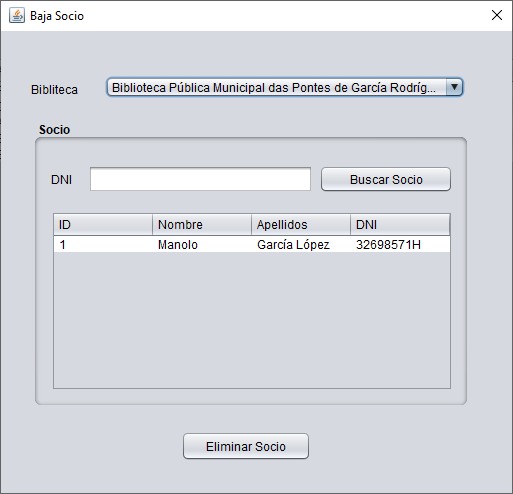

En esta ventana podremos dar de baja un socio.
Primero debemos seleccionar la biblioteca sobre la que trabajar.
Automaticamente se cargaran los socios pertenecientes a la biblioteca seleccionada.
Si sabemos el DNI, podremos introducirlo para filtrar los datos.
Por último debemos seleccionar el socio y pulsar sobre el botón de eliminar socio.